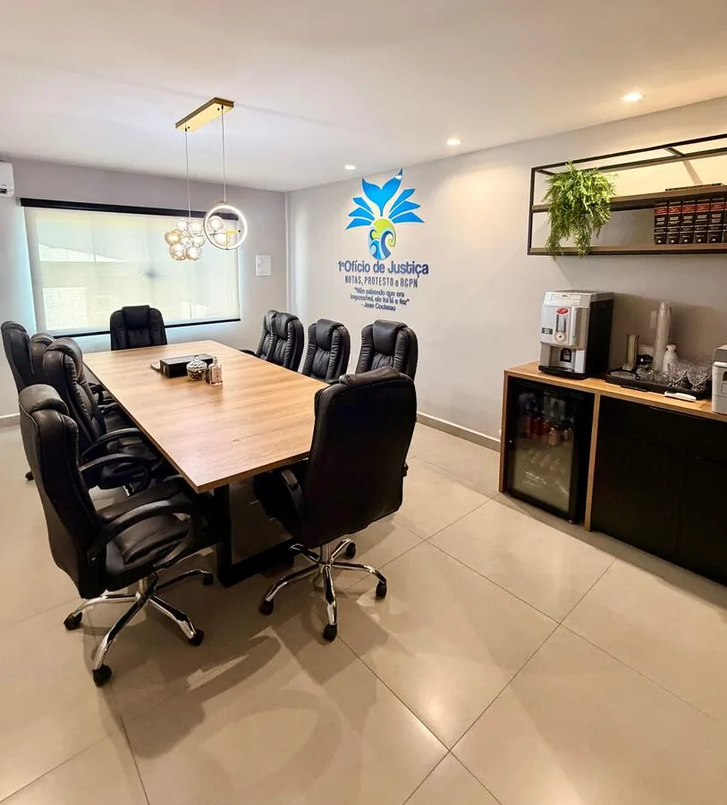

Escrituras públicas
Compra e venda, doação, permuta, inventário, divórcio consensual, união estável e outros atos notariais.
Ver orientaçõesNotas · Protesto · Registro Civil
Atendimento presencial: segunda a sexta, das 9h às 17h.
Plantão para nascimento e óbito: fins de semana e feriados, das 9h às 12h.
Aqui boa parte do atendimento começa — e muitas vezes termina — sem sair de casa. Fale com a nossa equipe pelo WhatsApp de segunda a sexta, das 9h às 17h, tire dúvidas a qualquer hora com o nosso assistente de inteligência artificial ou resolva você mesmo pelos serviços online.
Nosso compromisso
“Atuar com técnica, transparência e respeito ao cidadão, tornando cada ato cartorário mais claro, seguro e acessível.”
Somos um dos cartórios mais bem avaliados do Brasil no Google — reconhecimento da confiança e da excelência do nosso atendimento, inclusive nos atos eletrônicos.
Inteligência Artificial
Este cartório está entre os poucos no Brasil que oferecem serviços com inteligência artificial. Usuários podem tirar dúvidas ou iniciar um serviço a qualquer hora, com nossos atendentes dando prosseguimento em horário comercial.
Serviços do cartório

Antes de iniciar o atendimento, você pode consultar documentos necessários, prazos e formas de solicitação.
Compra e venda, doação, permuta, inventário, divórcio consensual, união estável e outros atos notariais.
Ver orientaçõesNascimento, casamento, óbito, averbações e transcrições de registros ocorridos no exterior.
Ver orientaçõesProtocolo, intimação, lavratura, pagamento e cancelamento de protestos com observância dos prazos legais.
Ver orientaçõesReconhecimento de firma, autenticação de cópias, apostilamento de Haia e serviços eletrônicos pelo e-Notariado.
Ver orientaçõesCertidões de atos notariais, protesto, Registro Civil e certidão negativa de Interdição, Tutela e Curatela.
Ver orientaçõesGuias práticos e atendimento para esclarecer documentos necessários antes do serviço presencial ou online.
Ver orientaçõesCalculadora de emolumentos
Informe o valor do imóvel e o seu WhatsApp. Nossa equipe calcula os emolumentos com base na tabela vigente no Estado do Rio de Janeiro e envia a simulação para você, junto com a lista de documentos necessários.
O cartório entrará em contato pelo WhatsApp em breve com a simulação dos emolumentos. Nosso atendimento é de segunda a sexta-feira, das 9h às 17h.
A simulação é uma estimativa calculada pela tabela de emolumentos vigente no Estado do Rio de Janeiro, já com os acréscimos legais e os tributos incidentes sobre o ato notarial. Não inclui o ITBI devido ao município nem os custos de registro no Cartório de Registro de Imóveis. O valor final pode variar conforme as particularidades de cada escritura.
Por que escolher nosso cartório
No setor de Notas, todos os escreventes são pós-graduados em Direito Imobiliário e Registral, reunindo conhecimento especializado, segurança jurídica e atenção em cada atendimento.


 Nossa equipe também conta com profissionais qualificados para atender estrangeiros em inglês, espanhol, italiano e chinês.
Nossa equipe também conta com profissionais qualificados para atender estrangeiros em inglês, espanhol, italiano e chinês.
Localização
Estamos em região central e de fácil acesso em Rio das Ostras/RJ.
Horário de atendimento
Atos urgentes de nascimento e óbito contam com plantão em fins de semana e feriados.
Segunda a sexta-feira, das 9h às 17h.
Sábados, domingos e feriados, das 9h às 12h.
Solicitações podem ser enviadas a qualquer momento, com análise em horário comercial.
Explore mais
Acesse guias, links oficiais, fotos e informações sobre o cartório.
Solicite serviços sem sair de casa e receba orientação da equipe.
Preencha formulários antes do atendimento presencial.
Consulte orientações por assunto, documentos, prazos e valores.
Orientações práticas por assunto antes do atendimento.
Trajetória e atuação do titular do 1º Ofício.
Fotos do cartório e de Rio das Ostras.
Indicadores por ano e tipo de serviço.
Portais oficiais para consultas e serviços.
Fale conosco
Envie sua mensagem com o serviço desejado. Nossa equipe responderá em horário comercial.
Obrigado por entrar em contato com o 1º Ofício de Justiça de Rio das Ostras. Nossa equipe responderá pelos dados informados, de segunda a sexta-feira, das 9h às 17h.
Agenda 2030
Adotada em 2015 pelos 193 Estados-membros da ONU, a Agenda 2030 reúne 17 Objetivos de Desenvolvimento Sustentável e 169 metas. O trabalho de um cartório está no centro desse compromisso: é do registro civil que nasce a identidade jurídica de uma pessoa, e é da atividade notarial e de protesto que vem boa parte da segurança jurídica e da solução de conflitos fora do Judiciário.
Provimento CNJ nº 85/2019
“As Corregedorias e as Serventias Extrajudiciais deverão inserir em seus portais ou sites, expressamente, a informação de que internalizaram a Agenda 2030, bem como a correspondência dos respectivos assuntos e atos normativos à cada um dos ODS.”
O ponto no canto do quadro marca os objetivos a que os atos praticados por esta serventia se relacionam diretamente.
Correspondência entre as atividades desta serventia, o fundamento de cada uma e os Objetivos de Desenvolvimento Sustentável, na forma do Anexo I do Provimento nº 85/2019.
Ato gratuito para todos, que dá à pessoa sua identidade jurídica e abre o acesso a documentos, escola, saúde e programas sociais.
Art. 30 da Lei nº 6.015/1973, com a redação dada pela Lei nº 9.534/1997
Rio das Ostras conta com unidade interligada em maternidade: o registro é feito no próprio hospital e a família recebe alta já com a certidão de nascimento em mãos.
Art. 54, § 5º, da Lei nº 6.015/1973, incluído pela Lei nº 14.382/2022
Os dados enviados pelos cartórios alimentam as estatísticas oficiais de mortalidade do país e orientam políticas públicas de saúde.
Lei nº 6.015/1973 e Sistema de Estatísticas Vitais do IBGE
Feito diretamente no cartório, sem processo judicial, garantindo à criança o nome do pai no registro e os direitos que dele decorrem.
Art. 1.609 do Código Civil, Lei nº 8.560/1992 e programa Pai Presente, do CNJ
A pessoa maior de 18 anos pode adequar prenome e gênero à identidade autopercebida diretamente no registro civil, sem autorização judicial.
Código Nacional de Normas do Foro Extrajudicial (Provimento CNJ nº 149/2023)
O registro de nascimento, o assento de óbito e a primeira certidão de cada um são gratuitos para todos. Os reconhecidamente pobres são isentos das demais certidões do registro civil.
Art. 30, caput e § 1º, da Lei nº 6.015/1973 e art. 5º, LXXVI, da Constituição Federal
Formalizam a compra e venda, a doação e os demais negócios sobre imóveis e produzem a prova que instrui a regularização fundiária e a usucapião extrajudicial, processadas no Registro de Imóveis. É a base da segurança da moradia.
Lei nº 8.935/1994 e Código Nacional de Normas do Foro Extrajudicial (Provimento CNJ nº 149/2023)
Resolvem no cartório, de forma consensual, o que antes exigia processo judicial — menos litígio, menos custo e menos tempo de espera.
Código de Processo Civil (Lei nº 13.105/2015)
Recupera créditos e resolve a inadimplência fora do Judiciário, com custo menor para quem cobra e caminho simples de regularização para quem deve.
Lei nº 9.492/1997
Escrituras, procurações e certidões por meio digital reduzem consumo de papel, deslocamentos e emissões associadas ao transporte.
Sistema Eletrônico dos Registros Públicos (Lei nº 14.382/2022) e Provimento CNJ nº 149/2023
Amplia o acesso ao serviço público delegado a qualquer hora do dia, inclusive fins de semana, sem exigir deslocamento até o balcão.
Iniciativa de modernização da serventia
Informação clara e gratuita sobre documentos, prazos e valores antes do atendimento, para que ninguém perca uma viagem ao cartório.
Iniciativa de transparência da serventia
A serventia opera conectada às centrais eletrônicas do registro civil e do notariado e a outros órgãos, o que evita retrabalho e novas viagens do cidadão.
Centrais de serviços eletrônicos compartilhados do foro extrajudicial
“Até 2030, fornecer identidade legal para todos, incluindo o registro de nascimento.”
Meta 16.9 do ODS 16, da Agenda 2030 das Nações Unidas
O registro civil de nascimento é o ato que faz uma pessoa existir juridicamente. Sem ele não há CPF, matrícula escolar, atendimento previdenciário nem acesso a programas sociais. É a meta da Agenda 2030 que mais diretamente depende do trabalho dos cartórios de registro civil — e o Brasil vem se aproximando dela.
Fonte: IBGE, Estimativas de Sub-Registro de Nascimentos e Óbitos 2024, divulgadas em 20 de maio de 2026.
O 1º Ofício de Justiça de Rio das Ostras apoia os Objetivos de Desenvolvimento Sustentável.
As denominações e as cores dos Objetivos de Desenvolvimento Sustentável seguem o padrão das Nações Unidas. Este site não é uma publicação das Nações Unidas e seu conteúdo não reflete a posição oficial da organização.